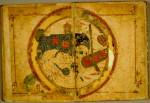

Ibrahim
b. Muh
De tekst van dit handschrift is een
verkorte versie van de Geografie van al-Ist
Het handschrift ligt open bij het begin van de tekst, op de eerste dubbelkaart, een wereldkaart naar Ptolemeïsch model. Het noorden is aan de beneden-, het zuiden aan de bovenzijde van de kaart. De aardschijf wordt omringd door een zee, aangegeven in blauw. Het centrum van de schijf valt ongeveer samen met het Arabisch schiereiland, Syrië en Irak. De tekst, waarmee de windstreken zijn aangegeven, vormt het goudgekleurde kader van de bladzijde. Rechts ziet men de Middellandse Zee, waarin van rechts naar links (dus van west naar oost) Sicilië, Kreta en Cyprus met rode cirkels zijn aangegeven. Rechts onder, dus ten noorden van de Middellandse Zee, is West-Europa. Als landen worden genoemd Andalusië, Frankrijk, Rome, Constantinopel en de Slaven. De inham naar het noorden is waarschijnlijk de Bosporus, maar deze is niet verbonden met de Zwarte Zee, die als een afgesloten meer links van de Middellandse Zee staat aangegeven. Voorbij de Bosporus zijn het ‘Land der Grieken’, de Bulgaren, de Khazaren en nog enkele andere volkeren. Langs de ‘Ringzee’ staat aangegeven: ‘steppes van het Noorden’. Aan de overzijde van de Middellandse Zee is aangegeven de ‘Magrib’ en ten zuiden daarvan het ‘Land der Zwarten’. Vervolgens komen de Nijl met daaraan Egypte en Syrië en Irak. De Eufraat en de Tigris zijn als brede waterwegen die uitmonden in de Perzische Golf aangegeven. Het Arabisch schiereiland wordt omspoeld door de Eufraat, Perzische Golf, Rode Zee en Indische Oceaan met de eilanden Kark en Uwal. Aan de overzijde van de Indische Oceaan is het ‘Land der Negers’ vermeld, dat kennelijk onderscheiden moet worden van West-Afrika, dat immers het ‘Land der Zwarten’ heet. Langs de ‘Zuidelijke Ringzee’ zijn de ‘woestijnen van het Zuiden’ aangegeven. In Azië, meer naar het oosten, valt de gedetailleerde indeling van Iran op: Daylam, Medië, Kuzistan, Magara, Fars, Kurasan, Kirman, Sidjistan en Sind. In Centraal-Azië vallen de beide binnenzeeën op: de Zwarte en de Kaspische Zee. Trans-Oxanië is ten noordoosten van de Kaspische Zee. Meer naar het oosten wordt melding gemaakt van India, Tibet en China.
Literatuur
- C. Brockelmann, Geschichte der arabischen Litteratur. Leiden 1937-1949. 5 dln, I, p. 408.
- S. Maqbul Ahmad, ‘Kharit
a’, in: The Encyclopedia of Islam. New ed. Vol. IV. Leiden 1978, p. 1077-1083. - P. Voorhoeve, Handlist of Arabic manuscripts in the Library of the University of Leiden and other collections in The Netherlands. 2nd, enl. ed. The Hague [etc.] 1980 ( = Bibliotheca Universitatis Leidensis. Codices manuscripti. VII), p. 200.
| vorige pagina | top pagina |